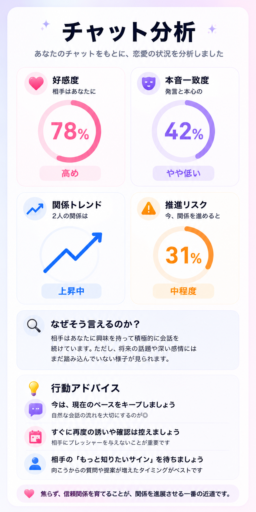

↩
返信アドバイス
重く見えにくく、自然に会話が続きやすい返信文を提案します。
昨日

Features
重く見えにくく、自然に会話が続きやすい返信文を提案します。
言葉の表面だけでなく、温度感や距離感の変化を読み取ります。
今の関係性を冷静に整理し、次にどう動くべきかを考えます。
Demo
返信が遅い、急に冷たい、でも完全に脈なしとも言えない。 そんな曖昧なLINEを、ReplyAIが整理します。
「行こう」と言っていても、具体的な日程が出ていないため、 こちらから強く詰めるより、軽く余白を残す返信が自然です。
Why ReplyAI
「忙しい」「また今度」だけで脈なしとは決めません。 前後のやり取りから温度感を見ます。
分析だけで終わらず、その状況に合った自然な返信例まで提案します。
不安が出やすい場面でも、相手に圧をかけにくい言い方を考えます。
FAQ
はい。まずは無料で試せます。利用回数や機能は今後変更される場合があります。
通知されません。LINEの内容を送っても、相手側に知られることはありません。
断定はしません。会話の流れから、可能性や注意点を整理します。
はい。LINEのスクショをもとに、返信や相手の温度感を分析できます。